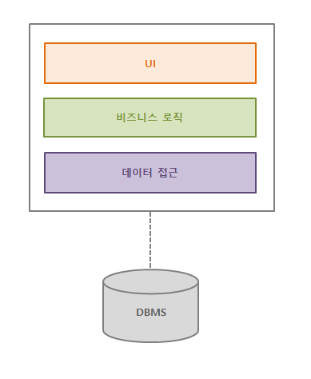
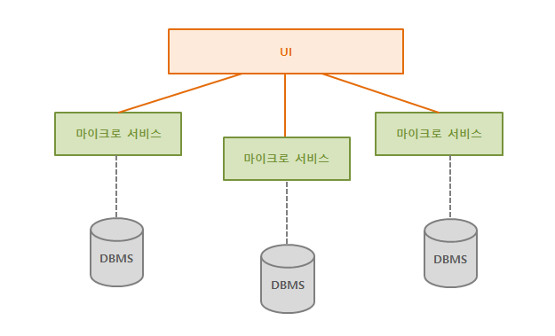
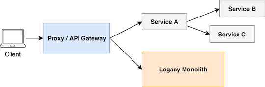

<!DOCTYPE html>
<html>
<head><meta name="generator" content="Hexo 3.8.0">
    <meta charset="utf-8">

    

    
    <title>MSA(Microservice Architecture) | Archive</title>
    
    <meta name="viewport" content="width=device-width, initial-scale=1, maximum-scale=1">
    
        <meta name="keywords" content="MSA">
    
    <meta name="description" content="목적: 마이크로서비스 아키텍처 톺아보기 내용 비교 Node.js API 서버 구축  비교 (monolith vs microservices)출처: martinfowler.com 모놀리틱 아키텍처 하나의 프로젝트로 구성된 애플리케이션 (waterfall model) 하나의 서버에 모든 비즈니스 로직이 들어가 있는 형태 서비스 규모가 커지면서 발생하는 각종 이슈">
<meta name="keywords" content="MSA">
<meta property="og:type" content="article">
<meta property="og:title" content="MSA(Microservice Architecture)">
<meta property="og:url" content="https://yxxnah.github.io/2019/04/17/MSA-Microservice-Architecture-톺아보기-1/index.html">
<meta property="og:site_name" content="Archive">
<meta property="og:description" content="목적: 마이크로서비스 아키텍처 톺아보기 내용 비교 Node.js API 서버 구축  비교 (monolith vs microservices)출처: martinfowler.com 모놀리틱 아키텍처 하나의 프로젝트로 구성된 애플리케이션 (waterfall model) 하나의 서버에 모든 비즈니스 로직이 들어가 있는 형태 서비스 규모가 커지면서 발생하는 각종 이슈">
<meta property="og:locale" content="en">
<meta property="og:image" content="https://yxxnah.github.io/2019/04/17/MSA-Microservice-Architecture-톺아보기-1/decentralised-data.png">
<meta property="og:updated_time" content="2019-04-23T00:07:50.445Z">
<meta name="twitter:card" content="summary">
<meta name="twitter:title" content="MSA(Microservice Architecture)">
<meta name="twitter:description" content="목적: 마이크로서비스 아키텍처 톺아보기 내용 비교 Node.js API 서버 구축  비교 (monolith vs microservices)출처: martinfowler.com 모놀리틱 아키텍처 하나의 프로젝트로 구성된 애플리케이션 (waterfall model) 하나의 서버에 모든 비즈니스 로직이 들어가 있는 형태 서비스 규모가 커지면서 발생하는 각종 이슈">
<meta name="twitter:image" content="https://yxxnah.github.io/2019/04/17/MSA-Microservice-Architecture-톺아보기-1/decentralised-data.png">
    

    

    
        <link rel="icon" href="/images/favicons/favicon.ico">
    

    <link rel="stylesheet" href="/libs/font-awesome/css/font-awesome.min.css">
    <link rel="stylesheet" href="/libs/titillium-web/styles.css">
    <link rel="stylesheet" href="/libs/source-code-pro/styles.css">

    <link rel="stylesheet" href="/css/style.css">
    <link rel="stylesheet" href="https://cdn.rawgit.com/innks/NanumSquareRound/master/nanumsquareround.css">

    <script src="/libs/jquery/3.3.1/jquery.min.js"></script>
    
    
        <link rel="stylesheet" href="/libs/lightgallery/css/lightgallery.min.css">
    
    
        <link rel="stylesheet" href="/libs/justified-gallery/justifiedGallery.min.css">
    
    
    


</head>
</html>
<body>
    <div id="wrap">
        <header id="header">
    <div id="header-outer" class="outer">
        <div class="container">
            <div class="container-inner">
                <div id="header-title">
                    <h1 class="logo-wrap">
                        <a href="/" class="logo"></a>
                    </h1>
                    
                        <h2 class="subtitle-wrap">
                            <p class="subtitle">배우고 씁니다.</p>
                        </h2>
                    
                </div>
                <div id="header-inner" class="nav-container">
                    <a id="main-nav-toggle" class="nav-icon fa fa-bars"></a>
                    <div class="nav-container-inner">
                        <ul id="main-nav">
                            
                                <li class="main-nav-list-item">
                                    <a class="main-nav-list-link" href="/">Home</a>
                                </li>
                            
                                        <ul class="main-nav-list"><li class="main-nav-list-item"><a class="main-nav-list-link" href="/categories/Programming/">Programming</a><ul class="main-nav-list-child"><li class="main-nav-list-item"><a class="main-nav-list-link" href="/categories/Programming/Git/">Git</a></li><li class="main-nav-list-item"><a class="main-nav-list-link" href="/categories/Programming/Java/">Java</a></li><li class="main-nav-list-item"><a class="main-nav-list-link" href="/categories/Programming/Tech/">Tech</a></li></ul></li></ul>
                                    
                                <li class="main-nav-list-item">
                                    <a class="main-nav-list-link" href="https://www.linkedin.com/in/%EC%9C%A4%EC%95%84-%EC%84%9C-a01040179/">About</a>
                                </li>
                            
                        </ul>
                        <nav id="sub-nav">
                            <div id="search-form-wrap">

    <form class="search-form">
        <input type="text" class="ins-search-input search-form-input" placeholder="Search">
        <button type="submit" class="search-form-submit"></button>
    </form>
    <div class="ins-search">
    <div class="ins-search-mask"></div>
    <div class="ins-search-container">
        <div class="ins-input-wrapper">
            <input type="text" class="ins-search-input" placeholder="Type something...">
            <span class="ins-close ins-selectable"><i class="fa fa-times-circle"></i></span>
        </div>
        <div class="ins-section-wrapper">
            <div class="ins-section-container"></div>
        </div>
    </div>
</div>
<script>
(function (window) {
    var INSIGHT_CONFIG = {
        TRANSLATION: {
            POSTS: 'Posts',
            PAGES: 'Pages',
            CATEGORIES: 'Categories',
            TAGS: 'Tags',
            UNTITLED: '(Untitled)',
        },
        ROOT_URL: '/',
        CONTENT_URL: '/content.json',
    };
    window.INSIGHT_CONFIG = INSIGHT_CONFIG;
})(window);
</script>
<script src="/js/insight.js"></script>

</div>
                        </nav>
                    </div>
                </div>
            </div>
        </div>
    </div>
</header>
        <div class="container">
            <div class="main-body container-inner">
                <div class="main-body-inner">
                    <section id="main">
                        <div class="main-body-header">
    <h1 class="header">
    
    <a class="page-title-link" href="/categories/Programming/">Programming</a><i class="icon fa fa-angle-right"></i><a class="page-title-link" href="/categories/Programming/Tech/">Tech</a>
    </h1>
</div>

                        <div class="main-body-content">
                            <article id="post-MSA-Microservice-Architecture-톺아보기-1" class="article article-single article-type-post" itemscope itemprop="blogPost">
    <div class="article-inner">
        
            <header class="article-header">
                
    
        <h1 class="article-title" itemprop="name">
        MSA(Microservice Architecture)
        </h1>
    

            </header>
        
        
            <div class="article-meta">
                
    <div class="article-date">
        <a href="/2019/04/17/MSA-Microservice-Architecture-톺아보기-1/" class="article-date">
            <time datetime="2019-04-17T08:02:55.000Z" itemprop="datePublished">2019-04-17</time>
        </a>
    </div>

		

                
    <div class="article-tag">
        <i class="fa fa-tag"></i>
        <a class="tag-link" href="/tags/MSA/">MSA</a>
    </div>

            </div>
        
        
        <div class="article-entry" itemprop="articleBody">
            <h2 id="목적"><a href="#목적" class="headerlink" title="목적"></a>목적</h2><p>: 마이크로서비스 아키텍처 톺아보기</p>
<h2 id="내용"><a href="#내용" class="headerlink" title="내용"></a>내용</h2><ol>
<li>비교</li>
<li><strong>Node.js API 서버 구축</strong></li>
</ol>
<h2 id="비교-monolith-vs-microservices"><a href="#비교-monolith-vs-microservices" class="headerlink" title="비교 (monolith vs microservices)"></a>비교 (monolith vs microservices)</h2><p><br>출처: martinfowler.com</p>
<h2 id="모놀리틱-아키텍처"><a href="#모놀리틱-아키텍처" class="headerlink" title="모놀리틱 아키텍처"></a>모놀리틱 아키텍처</h2><ul>
<li>하나의 프로젝트로 구성된 애플리케이션 (waterfall model)</li>
<li>하나의 서버에 모든 비즈니스 로직이 들어가 있는 형태</li>
<li>서비스 규모가 커지면서 발생하는 각종 이슈<br><span style="color:#e11d21">: 업데이트 및 테스트의 어려움, 블러킹 포인트 증가 등</span></li>
<li>구조<br></li>
</ul>
<h2 id="마이크로-서비스-아키텍처"><a href="#마이크로-서비스-아키텍처" class="headerlink" title="마이크로 서비스 아키텍처"></a>마이크로 서비스 아키텍처</h2><h3 id="개요"><a href="#개요" class="headerlink" title="개요"></a>개요</h3><ul>
<li>모놀리틱 아키텍처와 상반되는 아키텍처</li>
<li>하나의 큰 애플리케이션을 여러 개의 작은 애플리케이션으로 쪼개어 변경과 조합이 가능하도록 만든 아키텍처</li>
<li>애플리케이션의 추상화</li>
<li>서비스 단위로 서버를 구성</li>
<li>구조<br></li>
</ul>
<h3 id="언제-필요-할까"><a href="#언제-필요-할까" class="headerlink" title="언제 필요 할까?"></a>언제 필요 할까?</h3><ul>
<li>애플리케이션의 배포에 한 시간 이상 소요된다.</li>
<li>단순한 기능 하나를 수정해도 전체 기능에 대한 QA가 필요하다.</li>
<li>단순한 버그 수정이 더 중대한 버그를 생산하는 일이 많아졌다.</li>
<li>현재의 애플리케이션을 기능별로 나눈다고 가정했을 때 수십개의 마이크로서비스가 가능하다.</li>
</ul>
<h3 id="인터페이스-레이어"><a href="#인터페이스-레이어" class="headerlink" title="인터페이스 레이어"></a>인터페이스 레이어</h3><ul>
<li>HTTP 서버</li>
<li>클라이언트가 인터페이스 하나로 모든 API를 호출 할 수 있음</li>
</ul>
<h3 id="API-Gateway"><a href="#API-Gateway" class="headerlink" title="API Gateway"></a>API Gateway</h3><ul>
<li>클라이언트의 진입점(end-point)</li>
<li>클라이언트와 서비스의 분리를 가능하게 함</li>
</ul>
<h3 id="API-Gateway가-해주면-좋은-역할"><a href="#API-Gateway가-해주면-좋은-역할" class="headerlink" title="API Gateway가 해주면 좋은 역할"></a>API Gateway가 해주면 좋은 역할</h3><ul>
<li>인증</li>
<li>인가</li>
<li>Endpoint 관리 (Routing, LoadBalancer)</li>
<li>API 통계 및 로깅</li>
<li>API Request, Response 형식 검사 및 일관성 유지</li>
</ul>
<h2 id="왜-Node-js"><a href="#왜-Node-js" class="headerlink" title="왜 Node.js?"></a>왜 Node.js?</h2><ul>
<li><span style="color:#e11d21">non-blocking I/O, 싱글 스레드 방식</span><br>: API 요청 시 Client(PG사)의 대기 시간 감소 =&gt; 실시간 통신에 유리</li>
<li>API Gateway 에서 지원해야 할 기능(모듈)들을 많이 내장하고 있음</li>
</ul>
<h2 id="기대-효과"><a href="#기대-효과" class="headerlink" title="기대 효과"></a>기대 효과</h2><ul>
<li>API 통신 시간 단축 (Client 대기 시간 단축)</li>
<li>배포 및 테스트 단위 축소</li>
<li>유연한 기능 추가</li>
</ul>
<h2 id="도입-시-고려해야할-점"><a href="#도입-시-고려해야할-점" class="headerlink" title="도입 시 고려해야할 점"></a>도입 시 고려해야할 점</h2><ul>
<li>분산 서버 상태에 따른 응답속도 지연/장애 발생 가능</li>
<li>게이트웨이(endpoint)에서 오류발생, 지연 시 모든 서비스에 영향을 줄 수 있음</li>
</ul>
<h2 id="도입-방법"><a href="#도입-방법" class="headerlink" title="도입 방법"></a>도입 방법</h2><ul>
<li>기존 프로그램을 한 번에 바꾸는 것보다 점진적으로 바꿔나가는게 바람직<br></li>
</ul>
<p>출처 : <a href="https://blog.risingstack.com/building-an-api-gateway-using-nodejs/" target="_blank" rel="noopener">https://blog.risingstack.com/building-an-api-gateway-using-nodejs/</a></p>
<ul>
<li>request 받는 API 대상부터 시작 (서비스 상태 갱신)<h2 id="확인-사항"><a href="#확인-사항" class="headerlink" title="확인 사항"></a>확인 사항</h2></li>
<li>API Gateway = HTTP Server<ul>
<li>PHP API 호출 방식으로 하는 경우, 별도 서버 필요</li>
</ul>
</li>
<li>기존 연동 PG사/솔루션 legacy 보장 범위</li>
</ul>
<h2 id="참고-사이트"><a href="#참고-사이트" class="headerlink" title="참고 사이트"></a>참고 사이트</h2><h3 id="마이크로-서비스-아키텍처-1"><a href="#마이크로-서비스-아키텍처-1" class="headerlink" title="마이크로 서비스 아키텍처"></a>마이크로 서비스 아키텍처</h3><ul>
<li><a href="http://guruble.com/마이크로서비스microservice-아키텍처-그것이-뭣이-중헌디/" target="_blank" rel="noopener">http://guruble.com/마이크로서비스microservice-아키텍처-그것이-뭣이-중헌디/</a></li>
<li><a href="https://docs.microsoft.com/ko-kr/azure/architecture/guide/architecture-styles/microservices" target="_blank" rel="noopener">https://docs.microsoft.com/ko-kr/azure/architecture/guide/architecture-styles/microservices</a></li>
<li><a href="https://www.slideshare.net/saltynut/building-micro-service-architecture" target="_blank" rel="noopener">https://www.slideshare.net/saltynut/building-micro-service-architecture</a></li>
<li><a href="http://whatsup.nhnent.com/gd/board/viewByMeta/468/168273?_ssoType=real&amp;_useExternalNetwork=FALSE&amp;_requestMainDomain=nhnent.com&amp;_dynamicStaticURL=http://static.nhnent.com&amp;_defaultSystem=nhnent.com&amp;SPOT_TYPE=NOT_USE_RIGHT_MENU&amp;_defaultSystemTitle=WhatsUP" target="_blank" rel="noopener">http://whatsup.nhnent.com/gd/board/viewByMeta/468/168273?_ssoType=real&amp;_useExternalNetwork=FALSE&amp;_requestMainDomain=nhnent.com&amp;_dynamicStaticURL=http://static.nhnent.com&amp;_defaultSystem=nhnent.com&amp;SPOT_TYPE=NOT_USE_RIGHT_MENU&amp;_defaultSystemTitle=WhatsUP</a></li>
</ul>
<h3 id="Node-js-PHP"><a href="#Node-js-PHP" class="headerlink" title="Node.js  PHP"></a>Node.js <-> PHP</-></h3><ul>
<li>Node.js 와 PHP 통합 : <a href="https://entwickler.de/webandphp/integrating-node-js-with-php-125830.html" target="_blank" rel="noopener">https://entwickler.de/webandphp/integrating-node-js-with-php-125830.html</a></li>
<li>socket.io : <a href="https://poiemaweb.com/nodejs-socketio" target="_blank" rel="noopener">https://poiemaweb.com/nodejs-socketio</a></li>
<li>Node.js -&gt; PHP 모듈 실행 : <a href="https://medium.com/@MartinMouritzen/how-to-run-php-in-node-js-and-why-you-probably-shouldnt-do-that-fb12abe955b0" target="_blank" rel="noopener">https://medium.com/@MartinMouritzen/how-to-run-php-in-node-js-and-why-you-probably-shouldnt-do-that-fb12abe955b0</a></li>
<li>Node.js에서 자식 프로세스 실행 : <a href="https://mylko72.gitbooks.io/node-js/content/chapter9/chapter9_2.html" target="_blank" rel="noopener">https://mylko72.gitbooks.io/node-js/content/chapter9/chapter9_2.html</a></li>
</ul>

        </div>
        <footer class="article-footer">
            


    <a data-url="https://yxxnah.github.io/2019/04/17/MSA-Microservice-Architecture-톺아보기-1/" data-id="cjutjfps1000bvf3z41uk2eof" class="article-share-link"><i class="fa fa-share"></i>Share</a>
<script>
    (function ($) {
        $('body').on('click', function() {
            $('.article-share-box.on').removeClass('on');
        }).on('click', '.article-share-link', function(e) {
            e.stopPropagation();

            var $this = $(this),
                url = $this.attr('data-url'),
                encodedUrl = encodeURIComponent(url),
                id = 'article-share-box-' + $this.attr('data-id'),
                offset = $this.offset(),
                box;

            if ($('#' + id).length) {
                box = $('#' + id);

                if (box.hasClass('on')){
                    box.removeClass('on');
                    return;
                }
            } else {
                var html = [
                    '<div id="' + id + '" class="article-share-box">',
                        '<input class="article-share-input" value="' + url + '">',
                        '<div class="article-share-links">',
                            '<a href="https://twitter.com/intent/tweet?url=' + encodedUrl + '" class="article-share-twitter" target="_blank" title="Twitter"></a>',
                            '<a href="https://www.facebook.com/sharer.php?u=' + encodedUrl + '" class="article-share-facebook" target="_blank" title="Facebook"></a>',
                            '<a href="http://pinterest.com/pin/create/button/?url=' + encodedUrl + '" class="article-share-pinterest" target="_blank" title="Pinterest"></a>',
                            '<a href="https://plus.google.com/share?url=' + encodedUrl + '" class="article-share-google" target="_blank" title="Google+"></a>',
                        '</div>',
                    '</div>'
                ].join('');

              box = $(html);

              $('body').append(box);
            }

            $('.article-share-box.on').hide();

            box.css({
                top: offset.top + 25,
                left: offset.left
            }).addClass('on');

        }).on('click', '.article-share-box', function (e) {
            e.stopPropagation();
        }).on('click', '.article-share-box-input', function () {
            $(this).select();
        }).on('click', '.article-share-box-link', function (e) {
            e.preventDefault();
            e.stopPropagation();

            window.open(this.href, 'article-share-box-window-' + Date.now(), 'width=500,height=450');
        });
    })(jQuery);
</script>

        </footer>
    </div>
    <script type="application/ld+json">
    {
        "@context": "https://schema.org",
        "@type": "BlogPosting",
        "author": {
            "@type": "Person",
            "name": "Yoonah Seo"
        },
        "headline": "MSA(Microservice Architecture)",
        "image": "https://yxxnah.github.iodecentralised-data.png",
        "keywords": "MSA",
        "genre": "Programming Tech",
        "datePublished": "2019-04-17",
        "dateCreated": "2019-04-17",
        "dateModified": "2019-04-23",
        "url": "https://yxxnah.github.io/2019/04/17/MSA-Microservice-Architecture-톺아보기-1/",
        "description": "목적: 마이크로서비스 아키텍처 톺아보기
내용
비교
Node.js API 서버 구축

비교 (monolith vs microservices)출처: martinfowler.com
모놀리틱 아키텍처
하나의 프로젝트로 구성된 애플리케이션 (waterfall model)
하나의 서버에 모든 비즈니스 로직이 들어가 있는 형태
서비스 규모가 커지면서 발생하는 각종 이슈"
        "wordCount": 373
    }
</script>

</article>

    <section id="comments">
    
        
    <div id="disqus_thread">
        <noscript>Please enable JavaScript to view the <a href="//disqus.com/?ref_noscript">comments powered by Disqus.</a></noscript>
    </div>

    
    </section>


                        </div>
                    </section>
                    <aside id="sidebar">
    <a class="sidebar-toggle" title="Expand Sidebar"><i class="toggle icon"></i></a>
    <div class="github-card" data-github="yxxnah" data-width="340" data-height="150" data-theme="default"></div>
    <script src="//cdn.jsdelivr.net/github-cards/latest/widget.js"></script>
    
        
<nav id="article-nav">
    
        <a href="/2019/04/18/REST-API/" id="article-nav-newer" class="article-nav-link-wrap">
        <strong class="article-nav-caption">newer</strong>
        <p class="article-nav-title">
        
            REST API
        
        </p>
        <i class="icon fa fa-chevron-right" id="icon-chevron-right"></i>
    </a>
    
    
        <a href="/2019/04/08/Git-Branch-Strategy-2/" id="article-nav-older" class="article-nav-link-wrap">
        <strong class="article-nav-caption">older</strong>
        <p class="article-nav-title">Git Branch Strategy (2)</p>
        <i class="icon fa fa-chevron-left" id="icon-chevron-left"></i>
        </a>
    
</nav>

    
    <div class="widgets-container">
        
            
                

            
                
    <div class="widget-wrap">
        <h3 class="widget-title">recents</h3>
        <div class="widget">
            <ul id="recent-post" class="no-thumbnail">
                
                    <li>
                        
                        <div class="item-inner">
                            <p class="item-category"><a class="article-category-link" href="/categories/Programming/">Programming</a><i class="icon fa fa-angle-right"></i><a class="article-category-link" href="/categories/Programming/Java/">Java</a></p>
                            <p class="item-title"><a href="/2019/04/22/Java-Study-2/" class="title">Java Study (2)</a></p>
                            <p class="item-date"><time datetime="2019-04-22T09:20:19.000Z" itemprop="datePublished">2019-04-22</time></p>
                        </div>
                    </li>
                
                    <li>
                        
                        <div class="item-inner">
                            <p class="item-category"><a class="article-category-link" href="/categories/Programming/">Programming</a><i class="icon fa fa-angle-right"></i><a class="article-category-link" href="/categories/Programming/Git/">Git</a></p>
                            <p class="item-title"><a href="/2019/04/19/Git-Troubleshooting/" class="title">Git Troubleshooting</a></p>
                            <p class="item-date"><time datetime="2019-04-19T08:54:45.000Z" itemprop="datePublished">2019-04-19</time></p>
                        </div>
                    </li>
                
                    <li>
                        
                        <div class="item-inner">
                            <p class="item-category"><a class="article-category-link" href="/categories/Programming/">Programming</a><i class="icon fa fa-angle-right"></i><a class="article-category-link" href="/categories/Programming/Java/">Java</a></p>
                            <p class="item-title"><a href="/2019/04/18/Java-Study-1/" class="title">Java Study (1)</a></p>
                            <p class="item-date"><time datetime="2019-04-18T10:12:46.000Z" itemprop="datePublished">2019-04-18</time></p>
                        </div>
                    </li>
                
                    <li>
                        
                        <div class="item-inner">
                            <p class="item-category"><a class="article-category-link" href="/categories/Programming/">Programming</a><i class="icon fa fa-angle-right"></i><a class="article-category-link" href="/categories/Programming/Tech/">Tech</a></p>
                            <p class="item-title"><a href="/2019/04/18/REST-API/" class="title">REST API</a></p>
                            <p class="item-date"><time datetime="2019-04-18T02:49:14.000Z" itemprop="datePublished">2019-04-18</time></p>
                        </div>
                    </li>
                
                    <li>
                        
                        <div class="item-inner">
                            <p class="item-category"><a class="article-category-link" href="/categories/Programming/">Programming</a><i class="icon fa fa-angle-right"></i><a class="article-category-link" href="/categories/Programming/Tech/">Tech</a></p>
                            <p class="item-title"><a href="/2019/04/17/MSA-Microservice-Architecture-톺아보기-1/" class="title">MSA(Microservice Architecture)</a></p>
                            <p class="item-date"><time datetime="2019-04-17T08:02:55.000Z" itemprop="datePublished">2019-04-17</time></p>
                        </div>
                    </li>
                
            </ul>
        </div>
    </div>

            
                
    <div class="widget-wrap widget-list">
        <h3 class="widget-title">categories</h3>
        <div class="widget">
            <ul class="category-list"><li class="category-list-item"><a class="category-list-link" href="/categories/Programming/">Programming</a><span class="category-list-count">7</span><ul class="category-list-child"><li class="category-list-item"><a class="category-list-link" href="/categories/Programming/Git/">Git</a><span class="category-list-count">3</span></li><li class="category-list-item"><a class="category-list-link" href="/categories/Programming/Java/">Java</a><span class="category-list-count">2</span></li><li class="category-list-item"><a class="category-list-link" href="/categories/Programming/Tech/">Tech</a><span class="category-list-count">2</span></li></ul></li></ul>
        </div>
    </div>


            
                
    <div class="widget-wrap widget-list">
        <h3 class="widget-title">archives</h3>
        <div class="widget">
            <ul class="archive-list"><li class="archive-list-item"><a class="archive-list-link" href="/archives/2019/04/">April 2019</a><span class="archive-list-count">7</span></li></ul>
        </div>
    </div>


            
                
    <div class="widget-wrap widget-list">
        <h3 class="widget-title">tags</h3>
        <div class="widget">
            <ul class="tag-list"><li class="tag-list-item"><a class="tag-list-link" href="/tags/Git/">Git</a><span class="tag-list-count">3</span></li><li class="tag-list-item"><a class="tag-list-link" href="/tags/Java/">Java</a><span class="tag-list-count">2</span></li><li class="tag-list-item"><a class="tag-list-link" href="/tags/MSA/">MSA</a><span class="tag-list-count">1</span></li><li class="tag-list-item"><a class="tag-list-link" href="/tags/Tech/">Tech</a><span class="tag-list-count">1</span></li></ul>
        </div>
    </div>


            
                
    <div class="widget-wrap widget-float">
        <h3 class="widget-title">tag cloud</h3>
        <div class="widget tagcloud">
            <a href="/tags/Git/" style="font-size: 20px;">Git</a> <a href="/tags/Java/" style="font-size: 15px;">Java</a> <a href="/tags/MSA/" style="font-size: 10px;">MSA</a> <a href="/tags/Tech/" style="font-size: 10px;">Tech</a>
        </div>
    </div>


            
                
    <div class="widget-wrap widget-list">
        <h3 class="widget-title">links</h3>
        <div class="widget">
            <ul>
                
                    <li>
                        <a href="http://hexo.io">Hexo</a>
                    </li>
                
            </ul>
        </div>
    </div>


            
        
    </div>
</aside>

                </div>
            </div>
        </div>
        <footer id="footer">
    <div class="container">
        <div class="container-inner">
            <a id="back-to-top" href="javascript:;"><i class="icon fa fa-angle-up"></i></a>
            <div class="credit">
                <h1 class="logo-wrap">
                    <a href="/" class="logo"></a>
                </h1>
                <p>&copy; 2019 Yoonah Seo</p>
                <p>Powered by <a href="//hexo.io/" target="_blank">Hexo</a>. Theme by <a href="//github.com/ppoffice" target="_blank">PPOffice</a></p>
            </div>
            <div class="footer-plugins">
              
    


            </div>
        </div>
    </div>
</footer>

        
    
    <script>
    var disqus_shortname = 'hexo-theme-hueman';
    
    
    var disqus_url = 'https://yxxnah.github.io/2019/04/17/MSA-Microservice-Architecture-톺아보기-1/';
    
    (function() {
    var dsq = document.createElement('script');
    dsq.type = 'text/javascript';
    dsq.async = true;
    dsq.src = '//' + disqus_shortname + '.disqus.com/embed.js';
    (document.getElementsByTagName('head')[0] || document.getElementsByTagName('body')[0]).appendChild(dsq);
    })();
    </script>


    
        <script src="/libs/lightgallery/js/lightgallery.min.js"></script>
        <script src="/libs/lightgallery/js/lg-thumbnail.min.js"></script>
        <script src="/libs/lightgallery/js/lg-pager.min.js"></script>
        <script src="/libs/lightgallery/js/lg-autoplay.min.js"></script>
        <script src="/libs/lightgallery/js/lg-fullscreen.min.js"></script>
        <script src="/libs/lightgallery/js/lg-zoom.min.js"></script>
        <script src="/libs/lightgallery/js/lg-hash.min.js"></script>
        <script src="/libs/lightgallery/js/lg-share.min.js"></script>
        <script src="/libs/lightgallery/js/lg-video.min.js"></script>
    
    
        <script src="/libs/justified-gallery/jquery.justifiedGallery.min.js"></script>
    
    


<!-- Custom Scripts -->
<script src="/js/main.js"></script>

    </div>
</body>
</html>
